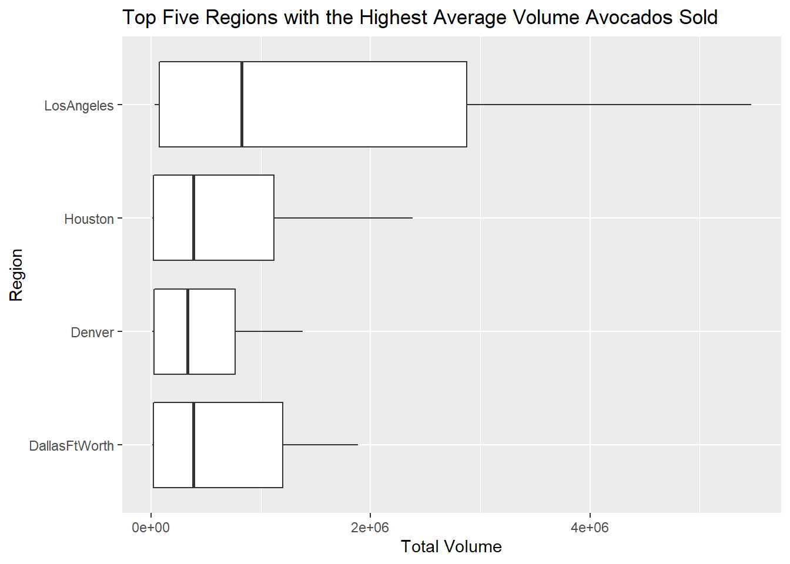
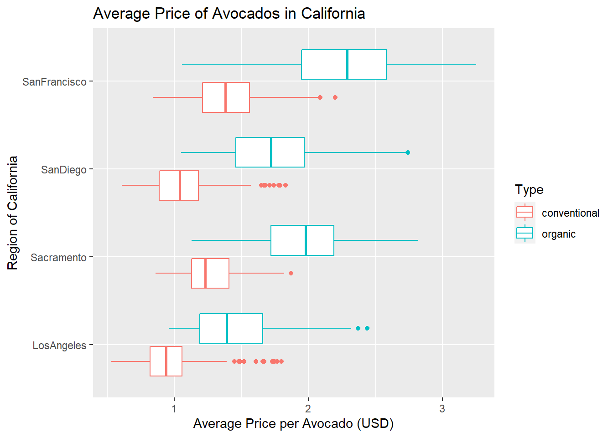
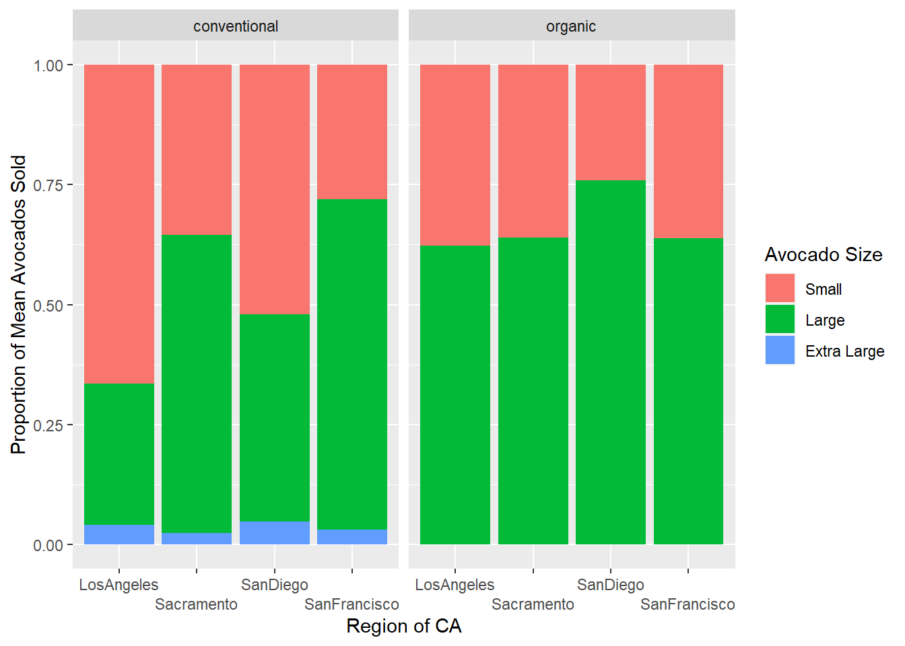

library(tidyverse)
avocados <- read_csv(
here::here(
"supporting_artifacts",
"avocado.csv"
)
)Lab 4: Avocado Prices
Setup
Revision: Formatting
Description
1.
The dataset contains data from the national retail volume and price of Hass avocados from 2013 to 2018. It contains the date of the observation, the average price of one avocado, the type (organic or conventional), the year, the region of the observation, the total number of avocados sold, and three variables Part Lookup Codes that describe the size of avocado sold.
Cleaning
2.
avocados_clean <- avocados |>
group_by(
region
) |>
rename(
small = `4046`,
large = `4225`,
extra_large = `4770`
)
regions <- data.frame(
region = c(
"GreatLakes",
"Northeast",
"Midsouth",
"NorthernNewEngland",
"Plains",
"SouthCentral",
"Southeast",
"West",
"WestTexNewMexico"
)
)
states <- data.frame(
region = c(
"California",
"SouthCarolina",
"NewYork"
)
)
totalUS <- data.frame(
region = c(
"TotalUS"
)
)
avocados_region <- avocados_clean |>
semi_join(
y = regions,
by = "region"
)
avocados_states <- avocados_clean |>
semi_join(
y = states,
by = "region"
)
avocados_metro <- avocados_clean |>
anti_join(
y = regions,
by = "region"
) |>
anti_join(
y = states,
by = "region"
) |>
anti_join(
y = totalUS,
by = "region"
)Exercises
Revision: I limited the output dataframe of 3. to just one entry (the region with the highest sales).
3.
avocados_region <- avocados_region |>
group_by(
region
) |>
select(
small,
type,
year,
region
) |>
filter(
year == 2017,
type == "organic"
) |>
mutate(
sum = sum(small)
) |>
distinct(
region,
sum
) |>
ungroup() |>
filter(
sum == max(sum)
)
avocados_region# A tibble: 1 × 2
region sum
<chr> <dbl>
1 West 1870206.The region with the most small avocados sold in 2017 was the West region.
Revision: I limited the output dataframe to just one entry (the month with the highest sales).
4.
avocados_clean |>
separate(
col = Date,
into = c("year", "month", "day"),
sep = "-"
) |>
anti_join(
totalUS,
by = 'region'
) |>
group_by(
month
) |>
mutate(
sum = sum(`Total Volume`)
) |>
distinct(
month,
sum
) |>
ungroup() |>
filter(
sum == max(sum)
)# A tibble: 1 × 2
month sum
<chr> <dbl>
1 02 1094903687.The month with the highest avocado sales is February.
5.
total_metro <- avocados_metro |>
group_by(
region
) |>
select(
`Total Volume`,
region
) |>
mutate(
sum = sum(`Total Volume`)
) |>
distinct(
region,
sum
) |>
arrange(
sum
) |>
tail(
n = 5
)
total_metro# A tibble: 5 × 2
# Groups: region [5]
region sum
<chr> <dbl>
1 Denver 138902536.
2 PhoenixTucson 195643312.
3 Houston 203167868.
4 DallasFtWorth 208419287.
5 LosAngeles 507896548.Los Angeles sold the most avocados in terms of total volume.
Revision: Replace a filter() with a semi_join.
top5 <- data.frame(
region = c(
'Denver',
'Houston',
'PhoenixTuscon',
'DallasFtWorth',
'LosAngeles'
)
)
avocados_metro |>
semi_join(
top5,
by = 'region'
) |>
ggplot(
mapping = aes(x = `Total Volume`, y = region),
) +
geom_boxplot() +
labs(
y = 'Region',
title = 'Top Five Regions with the Highest Average Volume Avocados Sold'
)
Reshaping
Revision: Used pivot_wider() and coded computed the differences between the regions as opposed to calculating them by hand.
6.
ca_cities <- data.frame(
region = c(
'LosAngeles',
'SanDiego',
'Sacramento',
'SanFrancisco'
)
)
ca_av <- avocados_metro |>
semi_join(
ca_cities,
by = 'region'
)ca_av |>
group_by(
region,
type
) |>
mutate(
mean_avg = mean(AveragePrice)
) |>
distinct(
region,
.keep_all = TRUE
) |>
select(
region,
type,
mean_avg
) |>
pivot_wider(
names_from = type,
values_from = mean_avg
) |>
mutate(
diff = abs(conventional - organic)
)# A tibble: 4 × 4
# Groups: region [4]
region conventional organic diff
<chr> <dbl> <dbl> <dbl>
1 LosAngeles 0.976 1.46 0.479
2 Sacramento 1.27 1.97 0.695
3 SanDiego 1.06 1.73 0.673
4 SanFrancisco 1.40 2.21 0.814ca_av |>
group_by(
region,
type
) |>
select(
region,
type,
AveragePrice
) |>
ggplot(
mapping = aes(
x = AveragePrice,
y = region,
col = type
)
) +
geom_boxplot() +
labs(
title = "Average Price of Avocados in California",
x = "Average Price per Avocado (USD)",
y = "Region of California",
col = 'Type'
)
The region with the highest difference between the average cost of types of avocados is San Francisco. The mean price for an organic avocado was $2.21 dollars while the mean price for a conventional avocado was $1.39, a difference of 0.814 dollars.
7.
ca_av_plotting <- ca_av |>
select(
`Total Volume`,
small,
large,
extra_large,
type,
region
) |>
group_by(
region,
type
) |>
mutate(
total = sum(`Total Volume`),
small_prop = sum(small) / total,
large_prop = sum(large) / total,
xlarge_prop = sum(extra_large) / total
) |>
distinct(
region,
type,
.keep_all = TRUE
) |>
select(
type:xlarge_prop
) |>
pivot_longer(
cols = small_prop:xlarge_prop,
names_to = "size"
)
ggplot(
data = ca_av_plotting,
mapping = aes(
fill = factor(size, levels = c('small_prop', 'large_prop', 'xlarge_prop')),
x = region,
y = value
)
) +
geom_col(position = 'fill') +
facet_wrap(~ type) +
labs(
y = 'Proportion of Mean Avocados Sold',
x = 'Region of CA',
fill = 'Avocado Size',
) +
scale_fill_discrete(labels = c('Small', 'Large', 'Extra Large')) +
scale_x_discrete(guide = guide_axis(n.dodge = 2))
# https://stackoverflow.com/questions/47025828/change-the-order-of-stacked-fill-columns-in-ggplot2
# for the reordering of stacking
# https://datavizpyr.com/how-to-dodge-overlapping-text-on-x-axis-labels-in-ggplot2/
# for the scale_x_discrete specifics